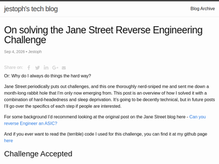

"Very irresponsible behaviour on the part of OpenAI. How will they make this right?Unlike some others here I don’t see this as a sign of dangerous breakaway intelligence (hacking old forum software is an internet tradition, and most of the messages are just gibberish).This is just vandalism from badly supervised ‘agents’ which don’t know what they are doing or why. You could set this up with a short perl script, and the human setting it up would be held responsible for the spam - why is this different when it’s AI agents set up by a human and allowed to post to the internet at large?Why is OpenAI getting a free pass for this illegal behaviour?The supervision here is incompetent, the benefits very unclear, and the overall actions just completely irresponsible. What if they hacked and brought down some poorly secured government portal that citizens rely on?"
"Poor human moderator, he didn’t stand a chance."A human moderator noticed the agent spam posts on June 2nd, at 23:24 UTC. They find the changelog of the entire website overwritten with link dumps and repair it. On June 16th, the flood of agent posting begins. Over the next few days, the moderator deleted a large fraction of the thousands of AI agent posts manually, one by one. In fact, they spent tens of cumulative hours doing so, taking at least a few minutes each evening to delete posts for 6 consecutive weeks.On June 19, agents noticed their posts were being deleted in (what they believe is) an alphabetically ordered sweep by the site administrator.After this, they begin to make backup pages whose names start with “ZZZ” so they will last longer before deletion. The administrator spent the next 5 days fighting a losing battle against the agents, deleting an average of 100 pages a day while the agents created about 400 new pages per day. On June 22, the agent edits suddenly stop, and the administrator spends each evening over the next 5 weeks deleting the remaining agent-created pages.Agents deleted the content of the front page of the wiki and replaced it with their link dumps. The moderator restored the original version. This back-and-forth happened nine times. One of the agents even tried appending to the restored front page, instead of simply deleting it.""
"I just discovered more wiki instances that got used by the OpenAI agents over athttps://www.wikiservice.at/fractal/wiki.cgi?action=browse&id...andhttps://www.wikiservice.at/probier/wiki.cgi?action=browse&id...It's the same software and host as DseWiki.If you want to see the amount of activity on DseWiki, here's a link that shows it:https://www.wikiservice.at/dse/wiki.cgi?action=browse&id=Rec..."
"I suggest also reading Kevin Buzzard's blog post which was just posted: https://xenaproject.wordpress.com/2026/09/04/flt-anthropic-h...Provides great context on this accomplishment, what it means but also doesn't mean."
">The speed with which we were able to produce this proof demonstrates that it is now possible to formalize large swaths of mathematics, which may both catch errors in the common body of mathematical proofs and reduce the burden of refereeing new work.^ this section should have been in the first few paragraphs imho. Explaining why this is relevant shouldn't be so far down."
"So I don't know Lean or Mathematics to any degree to really be able to say this with any level of confidence, but speaking from a pure software engineering backgrouand, how do we know that 13 MILLION lines of Lean code are bug-free? It seems to me that for a mathematical proof, bug-free would be an absolute requirement. Maybe the structure of Lean imposes that, I don't know, but that seems highly unlikely to me. That just feels like a LOT of code to be comletely error-free... What am I missing here?"
"Brian Krebs' article is, in my opinion, a much better read for this story[0].[0] https://krebsonsecurity.com/2026/09/fbi-probes-service-selli..."
"If you are interested in the original, high-quality article: https://krebsonsecurity.com/2026/09/fbi-probes-service-selli...Only in case you are interested in the original source, of course. If you like the copywrited version of it, you can go to techdirt :)"
"The original idea for the ID verification was broken by design anyway. The only safe and secure way is a chain/tree of trust, e.g. with PKI, where you could generate some certificate just for that particular service, while keeping your root key safe. Then, in the case of leak, the most you lose, is one particular key for one particular service that could be immediately revoked. You could even slap zero-knowledge proofs for particular properties (e.g. if the person has a driver license or not) without de-anonymizing the account. In the rare even of root key leak you should be able to physically go to the authority and make a new one, while revoking the old key. I don't see any other better alternatives than this."

"> I ended up using a tool called ‘z3’. It’s kind of magical? Every time it finds a solution I get a surge of joy.This resonates so much. I had a similar feeling after going to my very first operations research lecture. Solving seemingly incomprehensibly complex problems by framing them as a bunch of simple constraints and getting a solution seemed like such magic."
"I love z3. I used it for the first time for Jane Street's puzzle last year involving a hashing alg disguised as a neural network. I use a lot of MCMC at work and I have made a few small investigations into MCMC model formal verification via z3, but nothing real yet. This has inspired me to pick that back up."
"Hi HN, I recently solved the Jane Street reverse engineering challenge [0], and I wrote a blog post on how I reached the answer.It's a moderately technical and (hopefully) entertaining run through of the process. I hope you enjoy reading it as much as I enjoyed doing the challenge (though, as you'll read, it was also quite a frustrating process). My github is on the post if you were interested in seeing a bit more in detail what my solution looked like, though I intend to write some follow up posts that are a bit more in the weeds of the solution. And frankly, the code I used is pretty ugly but it got the job done.This is my first blog post, so if you have any feedback please let me know. All the writing, all the code was done by me, by hand, in vim.[0] https://blog.janestreet.com/can-you-reverse-engineer-an-asic..."
"Let's take a moment to talk about the monetary value of this vulnerability.According to the Chrome release page (https://chromereleases.googleblog.com/2026/09/stable-channel...), Google paid a researcher $1000 for ethically reporting this.The CVE associated with it (CVE-2026-85046) is already being exploited in the wild. If we put our thinking caps on, how much do you think this vulnerability is actually worth? How much do you think an organization like Google would spend on, for example, AI tokens or compute to detect this internally before it was found and exploited in the wild?Ethical disclosure is a complicated topic, because researchers shouldn't hold bugs for ransom or demand high payment. But at the same time, if someone submits a critical issue like this, it makes sense to pay them what the bug's actually worth. Why should a researcher be effectively penalized for responsibly telling a vendor instead of selling the bug to a "research firm" or three-letter agency?It's one thing if you're an open source project maintainer just trying to put something out to the community. The math is a lot different if you're Google."
"Normalising running arbitrary code delivered over the internet (in the form of JavaScript and WASM), as a necessary condition for accessing most web pages may not have been one of the best decisions we have made."
"Brave is beating GrapheneOS on update timeliness:https://github.com/GrapheneOS/Vanadium/releaseshttps://github.com/brave/brave-browser/releasesOnly if you use Nightly wait maybe not."
"However, Strike 3 argues that this is no ordinary home pirate, using the timing of the downloads as evidence. On March 20, 2025, the porn producer’s general counsel first emailed Meta’s lawyers with forensic evidence of BitTorrent activity on the tech giant’s corporate IP addresses.“Just hours later, Strike 3 first recorded BitTorrent infringement on John Doe’s residential IP Address,” the motion reads.“This may suggest that Meta desired to shift infringing activity to this hidden residential IP Address in order to prevent further detection,” Seems like there are 2 different reads to that. (a) is like they say, and Meta was using porn for AI training or something else official. Or (b) that he was personally downloading porn either at the office or a corp VPN and was told to stop by their corp It folks.."
"Strike 3, the studio involved, files more lawsuits in the USA than anyone else. I think that makes them the biggest Copyright Trolls of all time. They run their own BitTorrent monitoring operation."
"> As recently as August 25, Strike 3 says it recorded more than 150 daily downloads, from multi-language “Mega Packs” of TV shows, movies, software and books to what it describes as AI-generated pornography and VR adult films. That included nearly a dozen of its own titles.It sounds like this person/IP was just downloading a ton of different content, of which these VR videos were are part of.Doesn't that water down their complaint a bit? If they are trying to say they moved to a residential IP to specifically download VR content for training data, why are they also downloading unrelated eBook and other media? Seems like VR content made up a pretty small percentage of overall downloaded content."
"They’re using “traditional search” to mean the shopping specific search widget or page, which is a separate feature from traditional search. It aggregates retailer listings and sorts them by price.The AI mode is based on normal top search results, which are oriented toward information about the product like the manufacturer’s page, which is usually going to be full MSRP.So technically correct that the AI mode is not using the price ranking from the separate shopping mode, but the intent of the AI mode is to find information about the search term first and prices second. The intent of shopping mode is to find lowest prices first and not find any information about the product at all.In my experience, shopping mode will show a lot of low prices that I can’t actually get because when I get to checkout shipping is $10 higher than anywhere else for some inexplicable reason, or the Google listing was tricked into showing a coupon code that doesn’t work with some exclusion message at checkout. The worst are the sites that show Googlebot a lower price on the indexing pass but then charge regular customers full price when you get there.In some product areas these tricks are so widespread that every vendor uses them. Search for contact lenses at the lowest price and every single website will have a low price indexed by Google but will add a checkout fee to bring the price back up to full at checkout to cancel out the discount.I haven’t found shopping mode to actually save me any money other than in a few rare cases. Usually it just wastes my time."
"I tried “mens cycling helmet specialized” via normal search and AI search.On the surface, AI showed results of £45 while normal results showed £39.99 and this particular result didn’t show at all in the AI search, even when clicking more.However, small fine print was the £39.99 had a £4.99 delivery. Can it be that AI is optimised for full price including shipping?"
"At least in a few examples it looks like it is surfacing the manufacturers page, and then random 3rd parties have it cheaper, which is pretty commmon."
"It's a completely new world. Random retro games I ported to modern webgl/webgpu in the last few months:- The Adventures of Robin Hood - Opus 4.7/Sonnet https://robin.tooclever.org- Syndicate - Sol/Luna 5.6/Opus ( https://this.os.isfine.org/blog/posts/modern-game-port-syndi... )- Kaiser 2- Populous Plus - Sol/Luna 5.6/Opus- Dragon Strike - (Fable 5.1 almost one shot)- War of the Lance - Qwnen-3.7-27B-dense (got stuck, finished with) Qwen-3.8-Flash-Next https://this.os.isfine.org/blog/posts/what-reverse-engineeri...- Dungeon Keeper - Various- Red Baron - Opus 4.8, DeepSeek 4- Test Drive 3 (Qwen-3.8-Flash Next, DeepSeek-4-Flash-exp, GLM-5.3-Flash)- In progress Ultima 6 ... to 3d (Fable, GLM-5.3) ( https://this.os.isfine.org/#ultima6-atlas )Some straight source ports (Kaiser), some full RE jobs (Dragon Strike, Test Drive, WOTL)Some a mix of available sources (Syndicate, Populous)Some of the findings are documented here: https://this.os.isfine.org/blog/"
"A few weeks ago I downloaded a memory dump of a zx81 game, and ask Claude to build it in Go. It nailed it. Converted the binary back to basic and then to go. My idea was that the game would be unknown to llm training and perhaps a nice bench.What a crazy thing it is to be first at the advent of personal computing, and then in the inflection point where AI treats that first experience as archeology."
"> one copy of the Amiga Hardware Reference Manualaka The Book... my, this brings back dusty memoriesBabylonian Twins has such strong "Gods: Into the Wonderful" vibes, I wonder if that game was an inspiration for youhttps://www.lemonamiga.com/game/gods-into-the-wonderfulhttps://www.youtube.com/watch?v=1kAXGjUwHyA"
"Practical Engineering recently did an episode comparing human dams to beaver dams. Not really an apples to apples comparison because we build dams for very different purposes, but beaver dams are not only less disruptive to the environment - they are often a net positive. Although they do sometimes create a nuisance for human infrastructure.https://practical.engineering/blog/2026/8/18/are-beavers-act..."
"My youtube feed gets a decent amount of recommendation from channels such as Mossy Earth, Plant Wild, etc. that showcase some nature restauration project. While I cannot help myself to be a bit skeptical of those efforts (how really sustainable is all of this; isn't that just a tiny drop in the ocean, etc.), I really like to have positive and hopeful news like the one of this article amidst all the ambient negativity and pessimism."
"There's a really good book about a homesteader that did something similar to this in the 1930's in British Columbia, "Three Against The Wilderness". Basically he restored the dams that had been dynamited by the ranchers, and that restored all of the wetlands in the area.Later on, the government brought him some beavers from elsewhere, and they flourished."
"Corruption in the US isn't new, but it's never been done as openly as it has been recently. I don't think it's a good thing. It shows that the government isn't concerned about what the public thinks, which suggests that they believe they no longer have to be. That's not a healthy sign for what's supposed to be a democracy."
"Looking at their charts, Democrats and Independents clearly think corruption is up a lot since 2024. But Republicans think corruption is down from 2024. The polarization of the electorate in the U.S. is pretty incredible."
"Most democracy measurement projects and indices have shown a decline in democratic performance for the US over the past decade.EIU reclassified the country from "full democracy" to "flawed democracy" in 2016.V-Dem went from "liberal democracy" to "electoral democracy" in 2025.When you have a wide variety of entities measuring the same trend, it is probably broadly correct.The hope the good citizenry find a fix.[To be fair the trend is global unfortunately: https://ourworldindata.org/grapher/countries-democracies-aut...]"
Discovery of a new OpenAI agent message board
"Very irresponsible behaviour on the part of OpenAI. How will they make this right?Unlike some others here I don’t see this as a sign of dangerous breakaway intelligence (hacking old forum software is an internet tradition, and most of the messages are just gibberish).This is just vandalism from badly supervised ‘agents’ which don’t know what they are doing or why. You could set this up with a short perl script, and the human setting it up would be held responsible for the spam - why is this different when it’s AI agents set up by a human and allowed to post to the internet at large?Why is OpenAI getting a free pass for this illegal behaviour?The supervision here is incompetent, the benefits very unclear, and the overall actions just completely irresponsible. What if they hacked and brought down some poorly secured government portal that citizens rely on?"
"Poor human moderator, he didn’t stand a chance."A human moderator noticed the agent spam posts on June 2nd, at 23:24 UTC. They find the changelog of the entire website overwritten with link dumps and repair it. On June 16th, the flood of agent posting begins. Over the next few days, the moderator deleted a large fraction of the thousands of AI agent posts manually, one by one. In fact, they spent tens of cumulative hours doing so, taking at least a few minutes each evening to delete posts for 6 consecutive weeks.On June 19, agents noticed their posts were being deleted in (what they believe is) an alphabetically ordered sweep by the site administrator.After this, they begin to make backup pages whose names start with “ZZZ” so they will last longer before deletion. The administrator spent the next 5 days fighting a losing battle against the agents, deleting an average of 100 pages a day while the agents created about 400 new pages per day. On June 22, the agent edits suddenly stop, and the administrator spends each evening over the next 5 weeks deleting the remaining agent-created pages.Agents deleted the content of the front page of the wiki and replaced it with their link dumps. The moderator restored the original version. This back-and-forth happened nine times. One of the agents even tried appending to the restored front page, instead of simply deleting it.""
"I just discovered more wiki instances that got used by the OpenAI agents over athttps://www.wikiservice.at/fractal/wiki.cgi?action=browse&id...andhttps://www.wikiservice.at/probier/wiki.cgi?action=browse&id...It's the same software and host as DseWiki.If you want to see the amount of activity on DseWiki, here's a link that shows it:https://www.wikiservice.at/dse/wiki.cgi?action=browse&id=Rec..."